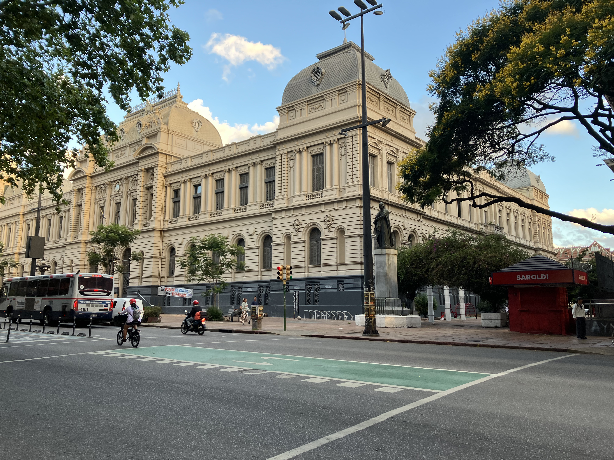
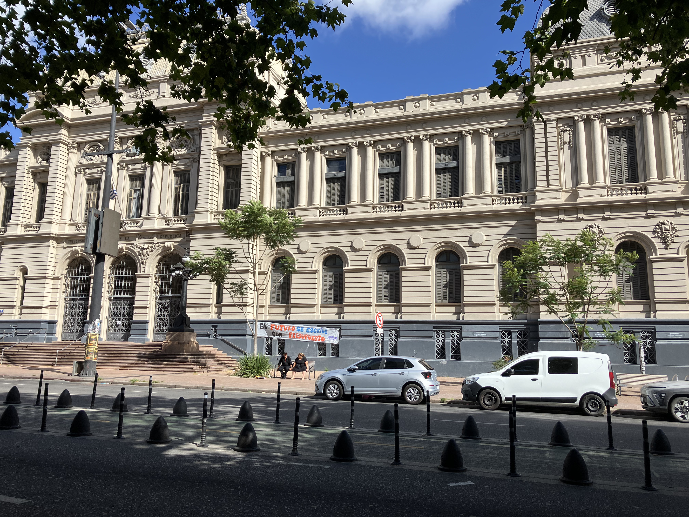
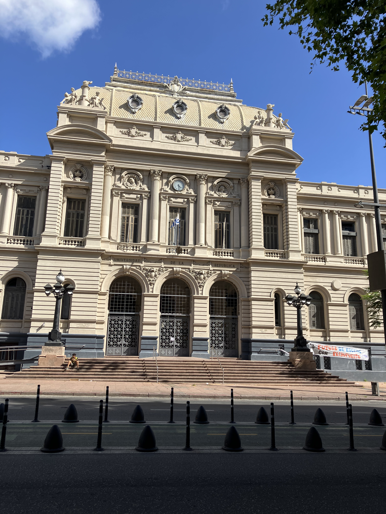

Facultad de Derecho

Architect: Juan María Aubriot, Silvio Geranio
Location: Av. 18 de Julio 1824, Montevideo
Completed: 1911
Style: Renaissance Revival / Historicist Academic
History
The Faculty of Law of Montevideo was established as part of the expansion of higher education in Uruguay during the early twentieth century. Completed in 1911, the building quickly became one of the most important academic centers in the country, training generations of lawyers, judges, politicians, and public leaders who shaped national institutions and democratic life.
Architecture
Its design follows the principles of Renaissance Revival and academic historicism, emphasizing symmetry, monumentality, and formal dignity. The grand façade facing Avenida 18 de Julio, the imposing columns, and the balanced proportions reflect the institutional seriousness associated with legal education, presenting architecture as a symbol of order, knowledge, and civic authority.
Legacy
The Faculty of Law stands today as one of Uruguay’s most recognizable educational buildings and a central symbol of public education. Beyond its academic function, it represents the country’s strong legal tradition and commitment to republican values. Its presence on one of Montevideo’s main avenues reinforces its civic and national significance.
Gallery


